Üstyapı
Binaların içindeki tesisat için PPRC, PVC ve sessiz boru grupları, fittingler ve parçalar.
Ürünleri incele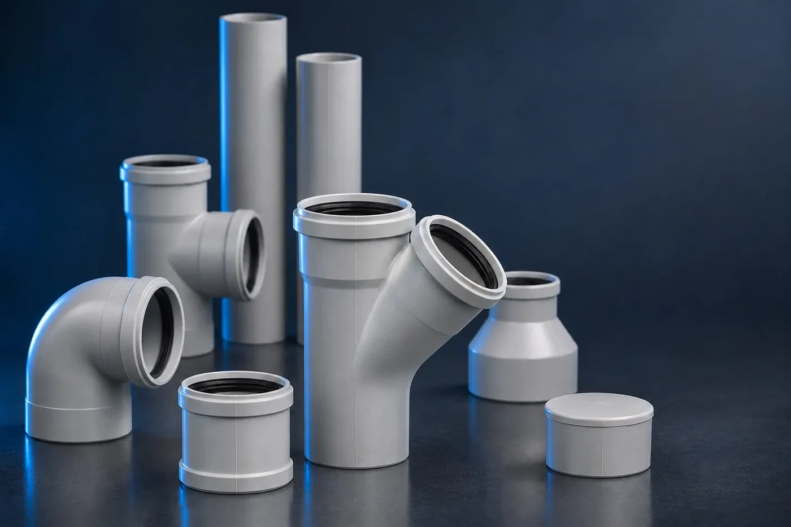
Uzun ömürlü ürünler üretiyor, KKTC'nin dört bir yanına ulaştırıyoruz.
Teklif İste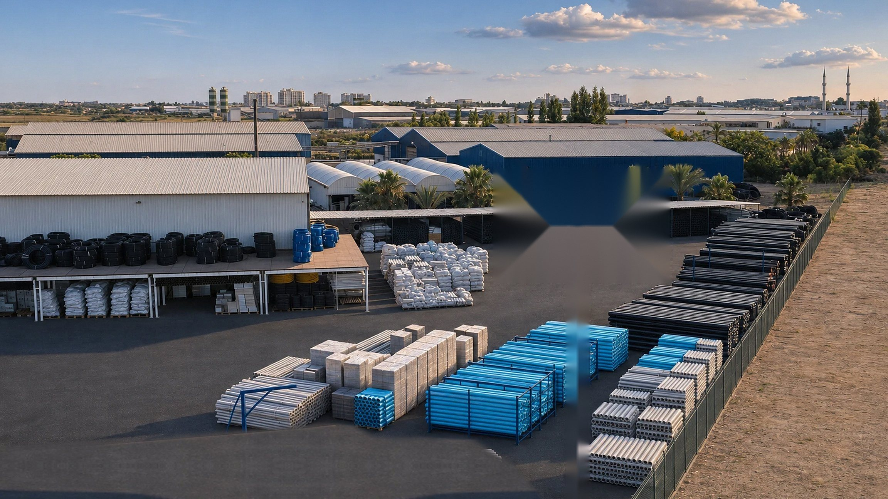
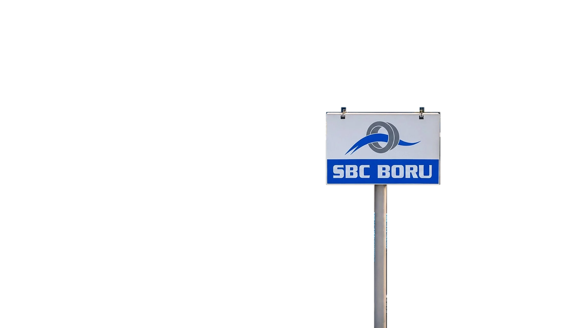
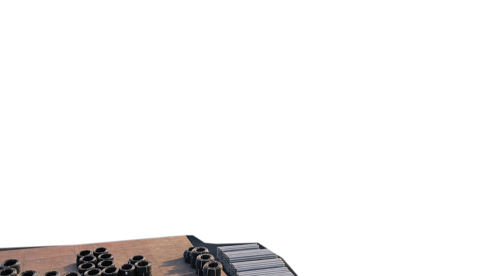
Merkezimizi 2015'te buraya taşıdık. 1.500 m² çalışma alanı ve 4.500 m² depo ile KKTC genelinde hizmet veriyoruz.
SBC Boru, 2004'te kuruldu. Yapı marketlerine, hırdavatçılara ve inşaat şirketlerine ürün tedarik ediyoruz.
Binaların içindeki tesisat için PPRC, PVC ve sessiz boru grupları, fittingler ve parçalar.
Ürünleri incele
Yol ve arsa altı hatları için HDPE borular, rögar kapakları ve altyapı parçaları.
Ürünleri incele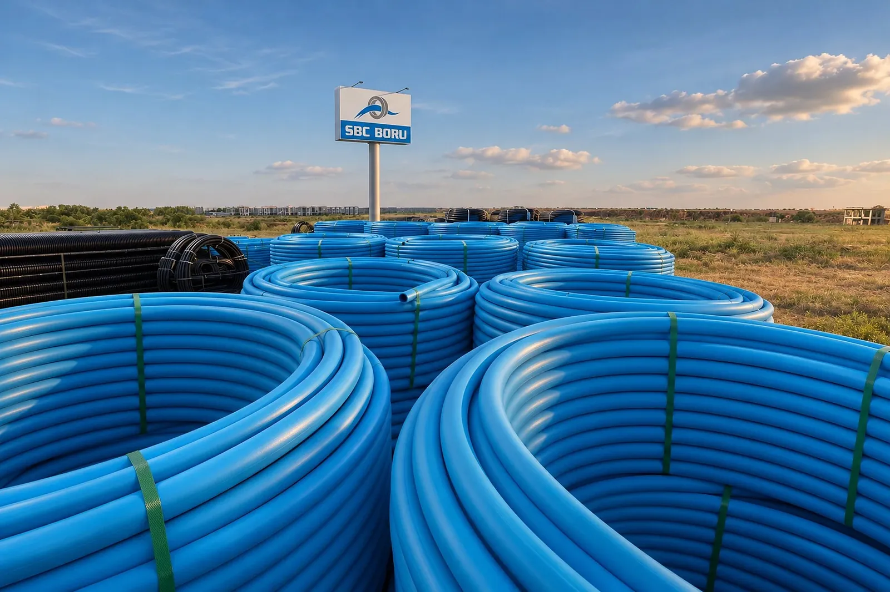
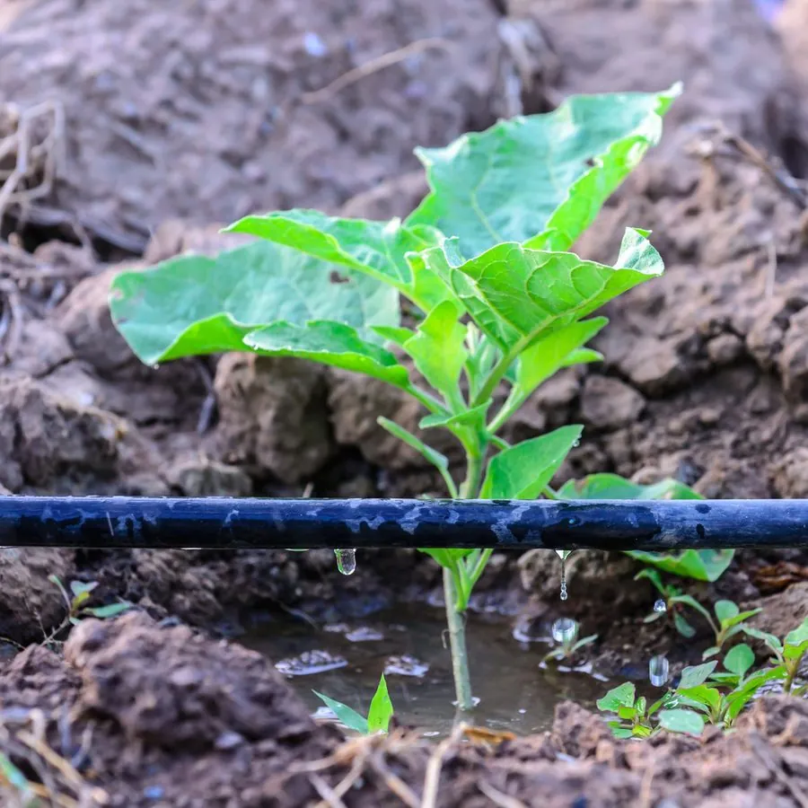
Üç alanın tamamı için 3.000'den fazla ürün çeşidi.
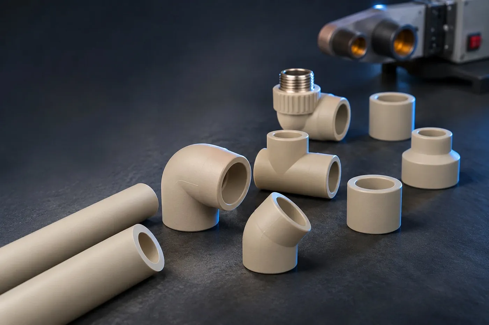
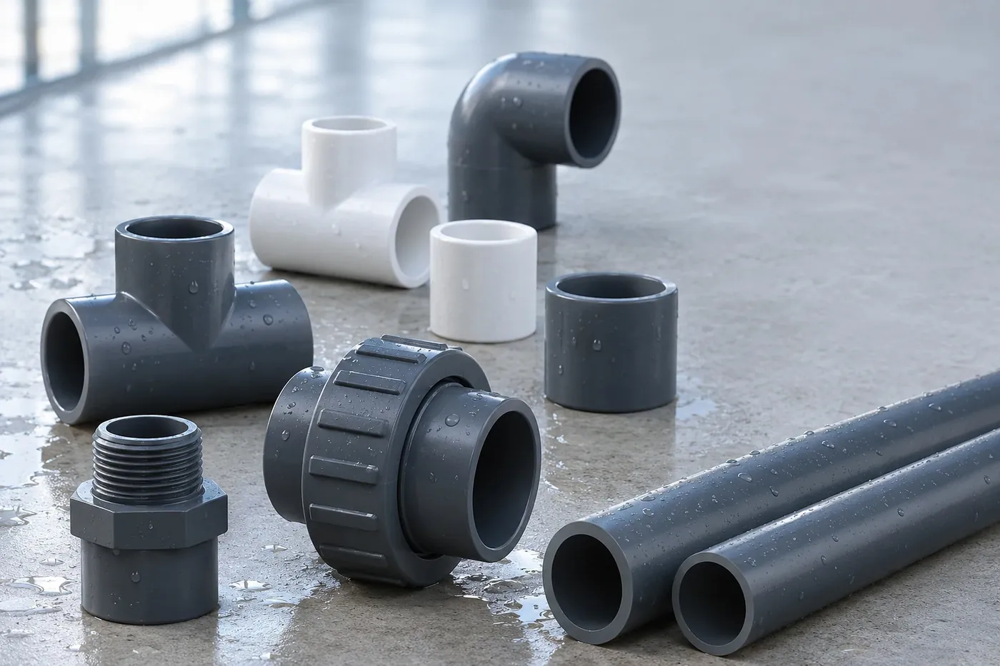
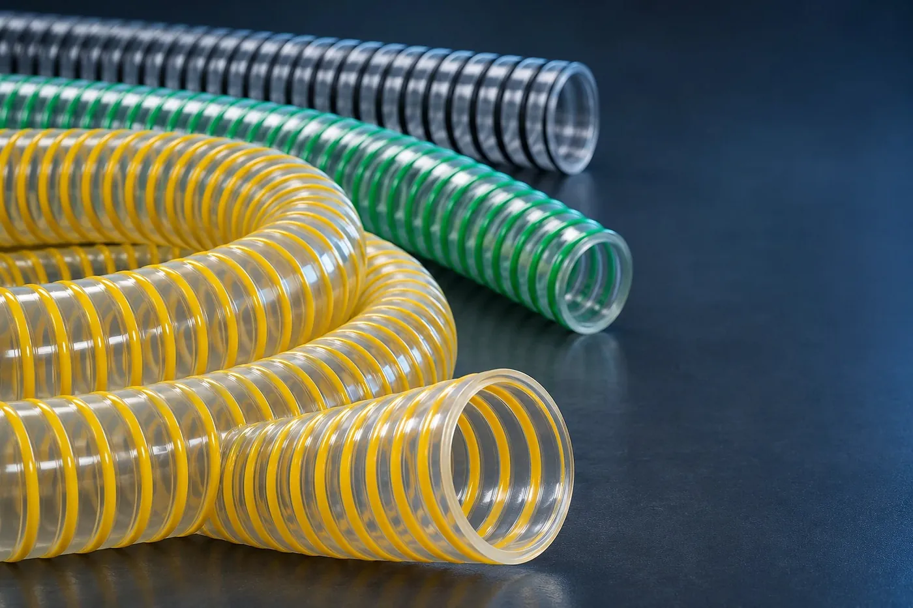
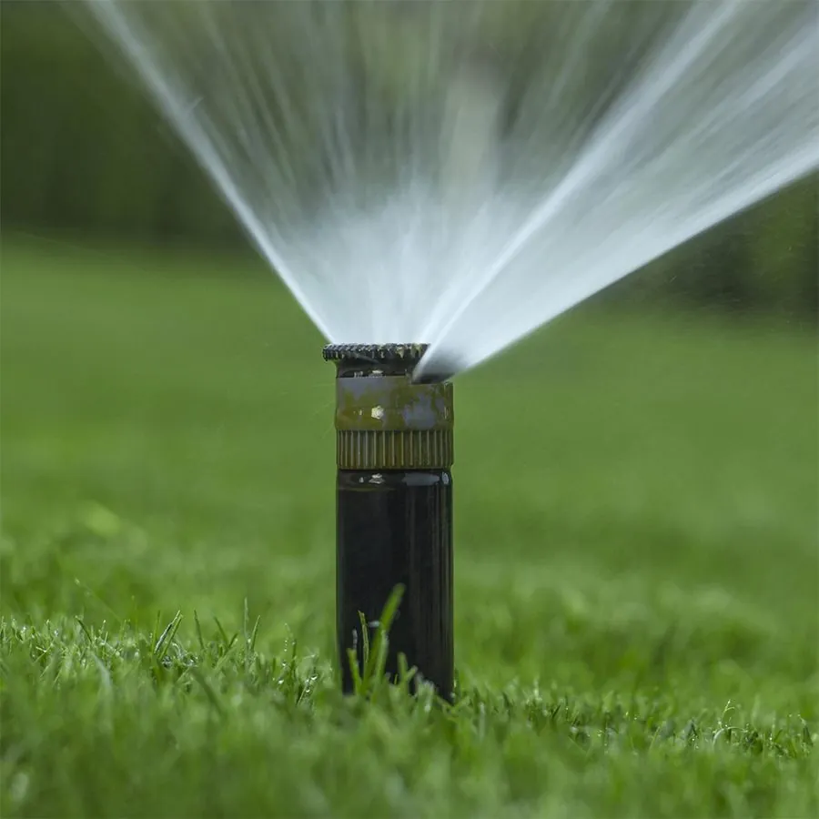
Tüm ürünler ve teknik bilgiler kataloğumuzda.
Kataloğu indirYeni kurduğumuz üretim tesisi, en son büyük adımımız. Burada PVC atık su boruları, siyah hortum (HDPE-LDPE), mandallı borular, U-PVC temiz su boruları ve PPRC boruları üretiyoruz. Yerli üretimi artırarak sektördeki gücümüzü büyütüyoruz.
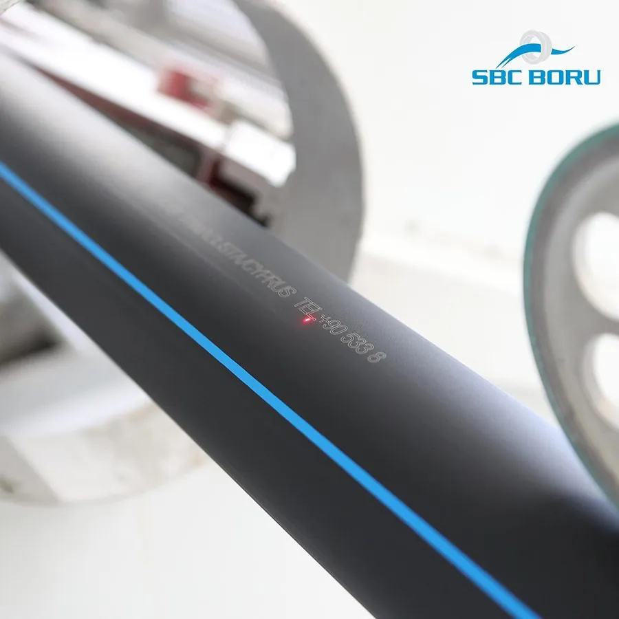
Üretim hattı. Boru üzerindeki işaret lazerle basılıyor.
Satış ofisi, çalışma alanı ve depomuz Gazimağusa'da. Üretimden sevkiyata her şey aynı yerde.
Çalışan, müşteri ve alan rakamları firma beyanıdır.
Ürün listenizi gönderin, kısa süre içinde size geri dönelim.
Teklif İste